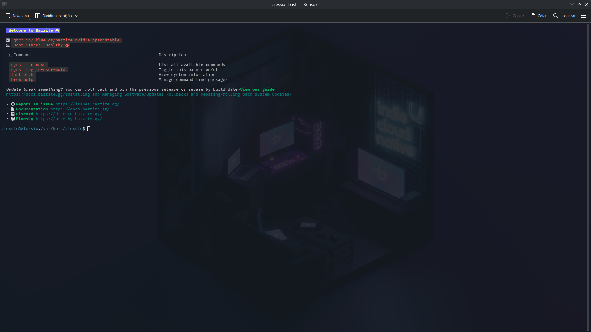

O que é o Terminal?
O terminal é uma interface que permite ao usuário interagir com o sistema Linux por meio de comandos escritos. Ele oferece uma forma direta de realizar tarefas e acessar recursos do sistema.
Para que serve?
O terminal pode ser utilizado para administrar o sistema, executar programas, configurar recursos, instalar softwares e realizar diversas tarefas de forma rápida e direta.
Terminal e interface gráfica
Diferente da interface gráfica, onde o usuário utiliza janelas, botões e menus, o terminal funciona principalmente através de comandos digitados pelo usuário.
Por que é importante no Linux?
O terminal é muito utilizado no Linux porque permite maior controle sobre o sistema e possibilita realizar tarefas que podem ser mais difíceis de executar apenas pela interface gráfica.